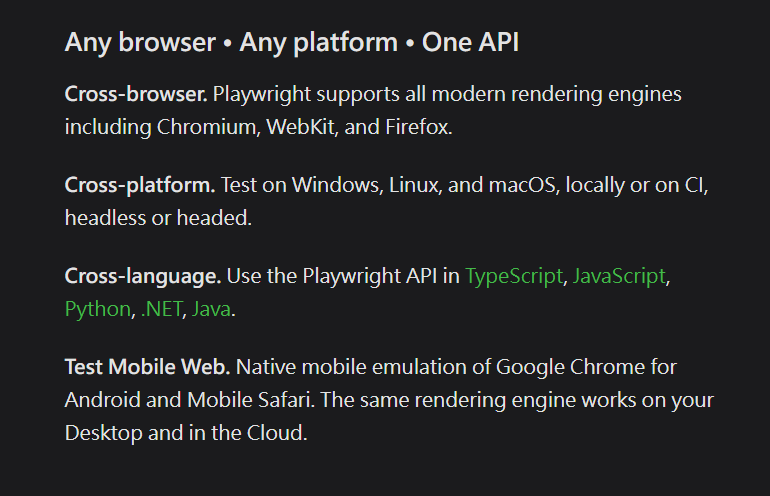
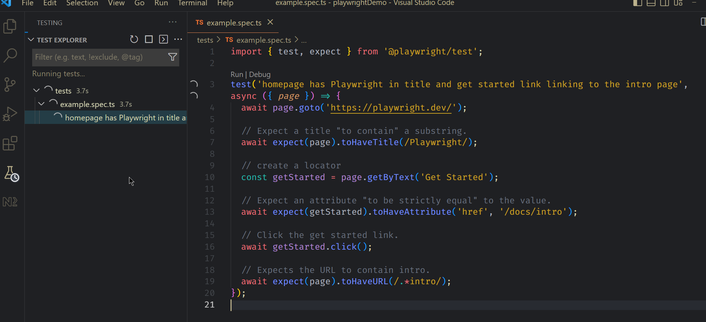

Playwright 是一套 E2E 的測試工具，可以測試多種瀏覽器環境(包含手機)，是一個功能強大且完整的工具
引用官網的介紹

專案初始
建立一個 playwright 的專案動作很單純，可以透過 npm init 的方式完成，步驟如下
- 建立一個資料夾來放 playwright 專案
- 開啟命令視窗切換到該資料夾
- 執行
npm init playwright@latest - 過程中會遇到幾個選擇
- 語言: JavaScript or TypeScript
- 測試資料夾的名稱
- 是否要加入 GitHub Actions 的指令
- 等待安裝，即可完成
等 npm install 結束後即可用 VSCode 開啟該資料夾專案，檔案結構很簡單
1 | playwright.config.ts |
playwright.config.ts 和 tests/ 下的東西晚點來看，先來跑一下測試與測試報告
執行測試的指令: npx playwright test
測試報告指令: npx playwright show-report
Playwright 設定檔
在 playwright.config.ts 內充滿了滿滿的註解，想要看不懂設定真的有一定的難度，除了測試檔案資料夾或是 timeout 設定都算基本的，測試環境的設定也是在這個設定檔內，相信這個各位開啟檔案後應該知道怎麼處理了
測試檔的語法
先從預設新增的測試檔案說明起，因為 playwright 提供的 api 功能強大，需要分別研究，現階段先看個感覺
1 | import { test, expect } from '@playwright/test'; |
- 基本語法結構跟寫 JS Unit test 很像，在
test內可已有測試描述即要執行的測試程式 page物件的操作等同操作瀏覽器的一個網頁- 使用 jasmine line 的 expect assertion 的語法來做測試，像是
expect(page).toHaveTitle(/Playwright/); - page 的操作會持續等待結果回來，或是超過 timeout 時間就會噴錯
- 也可以執行按鈕的動作或是點選連結的行為
- 整個測試流程可讀性還蠻高的
VSCode Extension
如果有使用 VSCode，也可以安裝 playwright 的 extension，裝了之後可以讓測試 playwright 更輕鬆

看起來就是簡單好用，更多件介紹由此去
心得
快速掃過官方文件，其實他可以做的不只有 E2E，也還可以做 API Testing，而且不像 cypress.io 一開始就那麼肥大，看起來是一個值得深入研究的工具